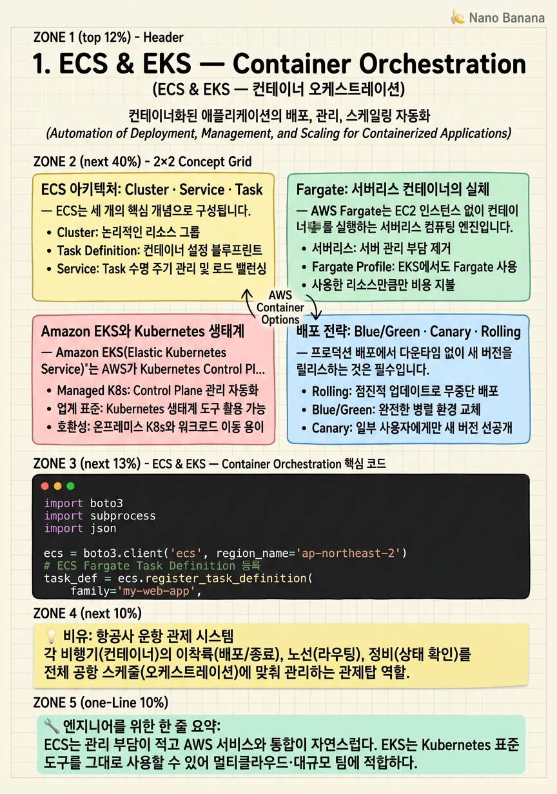

ECS & EKS — Container Orchestration

🎯 학습 목표
- ECS Task Definition과 Service의 구조를 설계할 수 있다
- Fargate와 EC2 launch type의 trade-off를 설명할 수 있다
- EKS 클러스터에 Helm Chart로 애플리케이션을 배포할 수 있다
- Blue/Green 및 Rolling 배포 전략을 실제 서비스에 적용할 수 있다
- 컨테이너 스케일링 정책을 비즈니스 메트릭 기반으로 설정할 수 있다
컨테이너는 현대 클라우드 아키텍처의 핵심 단위입니다. Amazon ECS와 EKS는 이 컨테이너를 프로덕션 규모로 실행하기 위한 두 가지 주요 오케스트레이션 플랫폼이며, 각각 다른 철학과 운영 모델을 가지고 있습니다.
Amazon ECS(Elastic Container Service)는 AWS가 완전히 관리하는 컨테이너 오케스트레이터입니다. 제어 영역(Control Plane)이 완전히 추상화되어 있고, Fargate를 사용하면 EC2 인스턴스조차 관리할 필요가 없습니다. 반면 Amazon EKS(Elastic Kubernetes Service)는 오픈소스 Kubernetes 위에 구축된 관리형 서비스로, 방대한 Kubernetes 생태계(Helm, Kustomize, Argo CD 등)를 그대로 활용할 수 있습니다.
이 챕터에서는 두 서비스의 내부 구조, Fargate의 서버리스 컨테이너 실행 모델, EKS의 노드 그룹과 Helm 배포, 그리고 프로덕션에서 반드시 알아야 할 배포 전략(Blue/Green, Canary)과 오토스케일링 패턴을 심층적으로 다룹니다.
 이미지 출처: © Amazon Web Services, Inc. — What is Amazon ECS (교육 목적 인용)
이미지 출처: © Amazon Web Services, Inc. — What is Amazon ECS (교육 목적 인용)
핵심 내용
ECS 아키텍처: Cluster · Service · Task
ECS는 세 개의 핵심 개념으로 구성됩니다. Cluster는 컨테이너가 실행되는 인프라 경계입니다. EC2 인스턴스의 집합이거나, Fargate의 경우 논리적 네임스페이스입니다.
Task Definition은 컨테이너를 어떻게 실행할지를 정의하는 JSON 청사진입니다. CPU·메모리 할당, 컨테이너 이미지 URI, 환경 변수, IAM Role, 네트워크 모드, 볼륨 마운트, 로깅 설정이 모두 이 안에 들어갑니다. Task Definition은 버전 관리가 되며, my-task:5처럼 revision 번호로 참조합니다.
Service는 Task의 원하는 개수(desired count)를 유지하고, ALB와 연동하여 트래픽을 라우팅하는 장기 실행 오케스트레이터입니다. Service가 Task의 상태를 감시하고, 실패한 Task는 자동으로 재시작합니다.
Task는 실제로 실행 중인 컨테이너 인스턴스입니다. 하나의 Task 안에 여러 컨테이너가 공존할 수 있으며, 이를 sidecar 패턴이라고 합니다. 예를 들어 메인 애플리케이션 컨테이너와 Datadog Agent 컨테이너를 같은 Task에 넣어 메트릭을 수집합니다.
Fargate: 서버리스 컨테이너의 실체
AWS Fargate는 EC2 인스턴스 없이 컨테이너를 실행하는 서버리스 컴퓨팅 엔진입니다. Fargate를 사용하면 OS 패치, 인스턴스 타입 선택, 클러스터 용량 관리가 모두 AWS 책임이 됩니다.
Fargate의 격리 모델은 VM 수준입니다. 각 Task는 자체 커널과 네트워크 인터페이스를 가진 격리된 마이크로VM에서 실행됩니다. 이는 EC2 launch type에서 같은 호스트의 여러 Task가 커널을 공유하는 것과 다릅니다. 따라서 Fargate는 보안이 중요한 멀티테넌트 워크로드에 특히 적합합니다.
비용 모델은 vCPU·시간과 GB·시간 단위입니다. 스팟 인스턴스처럼 Fargate Spot을 사용하면 최대 70%까지 비용을 절감할 수 있으나, 2분 전 알림 후 회수될 수 있으므로 무상태(stateless) 워크로드에만 적합합니다.
| 비교 | Fargate | EC2 Launch Type |
|---|---|---|
| 인프라 관리 | AWS 완전 관리 | 사용자 관리 |
| 격리 수준 | VM 수준 | 프로세스 수준 |
| 비용 | Task 단위 과금 | 인스턴스 단위 과금 |
| 최적 워크로드 | 가변적 트래픽, 보안 | 예측 가능한 대규모 트래픽 |
Amazon EKS와 Kubernetes 생태계
Amazon EKS(Elastic Kubernetes Service)는 AWS가 Kubernetes Control Plane(API Server, etcd, Scheduler, Controller Manager)을 관리해주는 서비스입니다. 사용자는 Worker Node(EC2 또는 Fargate)만 관리하면 됩니다.
EKS의 강점은 표준 Kubernetes API와의 완전한 호환성입니다. kubectl, Helm, Kustomize, Argo CD, Flux 등 모든 Kubernetes 도구가 그대로 동작합니다. 이는 멀티클라우드 전략이나 온프레미스 Kubernetes에서 마이그레이션할 때 큰 장점입니다.
Managed Node Groups는 EC2 인스턴스를 Node로 자동 프로비저닝·업데이트·종료하는 기능입니다. Auto Scaling Group 위에 동작하며, kubectl drain을 자동으로 실행하여 안전하게 노드를 교체합니다.
Karpenter는 AWS가 개발한 오픈소스 노드 오토스케일러입니다. 기존 Cluster Autoscaler보다 훨씬 빠르게 (수십 초 내) 필요한 인스턴스 타입을 직접 프로비저닝합니다. Spot·On-Demand 혼합 전략을 Provisioner 리소스로 선언적으로 관리할 수 있습니다.
Helm은 Kubernetes의 패키지 매니저입니다. Chart는 Kubernetes 리소스 템플릿의 묶음이며, values.yaml로 환경별 설정을 주입합니다. helm upgrade --install로 선언적 배포를 구현합니다.
배포 전략: Blue/Green · Canary · Rolling
프로덕션 배포에서 다운타임 없이 새 버전을 릴리스하는 것은 필수입니다. AWS는 세 가지 주요 배포 전략을 지원합니다.
Rolling Update는 Task를 순차적으로 교체합니다. minimumHealthyPercent(최소 유지 비율)와 maximumPercent(최대 Task 수 비율)를 설정하여 속도와 안전성을 균형잡습니다. ECS Service의 기본 배포 전략이며 구성이 간단합니다.
Blue/Green 배포는 CodeDeploy와 ECS를 연동하여 구현합니다. 현재 버전(Blue)과 새 버전(Green) 두 개의 Target Group이 존재하고, ALB Listener Rule을 전환하여 트래픽을 이동합니다. 문제가 있으면 Blue로 즉시 롤백할 수 있습니다. EKS에서는 Argo Rollouts가 동일한 기능을 제공합니다.
Canary 배포는 새 버전으로 트래픽의 일부(예: 5%)만 먼저 보내어 오류율을 모니터링한 후 점진적으로 100%로 확장합니다. AWS App Mesh 또는 ALB Weighted Target Group으로 구현합니다.
"Deployment strategy is risk management. Blue/Green gives you instant rollback; Canary gives you blast radius control." — AWS Container Hero, re:Invent 2023
ECR과 이미지 관리 전략
Amazon ECR(Elastic Container Registry)는 AWS의 완전 관리형 Docker 이미지 레지스트리입니다. IAM과 완전히 통합되어 별도의 자격증명 없이 ECS/EKS에서 이미지를 Pull할 수 있습니다.
ECR 수명 주기 정책(Lifecycle Policy)은 오래된 이미지를 자동 삭제하여 스토리지 비용을 관리합니다. imageCountMoreThan 규칙으로 태그별 보관 개수를 제한하거나, sinceImagePushed로 일정 기간 이상 된 이미지를 삭제합니다.
이미지 스캔(Image Scanning)은 ECR이 제공하는 취약점 스캔 기능입니다. 기본 스캔은 푸시 시점에 CVE 데이터베이스를 검사하며, Enhanced 스캔(Amazon Inspector 연동)은 지속적으로 새 CVE를 모니터링합니다.
ECR Public은 퍼블릭 이미지를 무료로 호스팅합니다. 오픈소스 프로젝트나 베이스 이미지 배포에 활용합니다. 프라이빗 레지스트리의 이미지를 ECR에 미러링하여 외부 의존성을 제거하는 것이 프로덕션 모범 사례입니다.
💡 비유로 이해하기
ECS/EKS를 이해하려면 항공사 운항 관제 시스템을 상상해보세요. Task Definition은 비행기의 기종 명세서(B737의 좌석 수, 연료 용량, 승무원 구성)입니다. 매번 비행할 때마다 이 명세서를 참고해 비행기를 구성합니다.
Service는 관제탑입니다. "서울-도쿄 노선에는 항상 5대가 운항 중이어야 한다"는 목표를 유지하며, 비행기가 결항되면 즉시 대체기를 투입합니다. Fargate는 비행기를 빌려주는 회사입니다. 항공사는 비행기를 직접 소유하지 않고 필요할 때만 빌려 씁니다. 정비, 보험, 주기장 걱정이 없죠.
EKS는 국제 공항입니다. 세계 어디서든 같은 표준(Kubernetes API)을 사용하므로, A 공항에서 사용하던 관제 시스템을 B 공항에서도 그대로 쓸 수 있습니다. ECS는 국내 전용 공항으로, AWS 방식에 최적화되어 있지만 표준 Kubernetes 도구는 사용할 수 없습니다.
💻 코드 예시
boto3를 사용하여 ECS Fargate Task를 프로그래밍 방식으로 실행하고, EKS 클러스터에 Helm Chart를 배포하는 예제입니다.
import boto3
import subprocess
import json
ecs = boto3.client('ecs', region_name='ap-northeast-2')
# ECS Fargate Task Definition 등록
task_def = ecs.register_task_definition(
family='my-web-app',
networkMode='awsvpc',
requiresCompatibilities=['FARGATE'],
cpu='512', # 0.5 vCPU
memory='1024', # 1 GB
executionRoleArn='arn:aws:iam::123456789:role/ecsTaskExecutionRole',
taskRoleArn='arn:aws:iam::123456789:role/ecsTaskRole',
containerDefinitions=[
{
'name': 'web',
'image': '123456789.dkr.ecr.ap-northeast-2.amazonaws.com/my-app:v1.2.3',
'portMappings': [{'containerPort': 8080}],
'environment': [
{'name': 'ENV', 'value': 'production'}
],
'logConfiguration': {
'logDriver': 'awslogs',
'options': {
'awslogs-group': '/ecs/my-web-app',
'awslogs-region': 'ap-northeast-2',
'awslogs-stream-prefix': 'ecs'
}
},
'healthCheck': {
'command': ['CMD-SHELL', 'curl -f http://localhost:8080/health || exit 1'],
'interval': 30,
'timeout': 5,
'retries': 3
}
}
]
)
task_def_arn = task_def['taskDefinition']['taskDefinitionArn']
print(f'Task Definition: {task_def_arn}')
# ECS Service 업데이트 (새 Task Definition으로 Rolling 배포)
response = ecs.update_service(
cluster='production-cluster',
service='my-web-app-service',
taskDefinition=task_def_arn,
deploymentConfiguration={
'minimumHealthyPercent': 100, # 다운타임 없는 배포
'maximumPercent': 200
}
)
print(f"Deployment started: {response['service']['deployments'][0]['id']}")
# EKS에 Helm Chart 배포 (kubectl/helm은 subprocess로 호출)
def deploy_helm_chart(cluster_name: str, chart: str, release: str, values: dict):
# kubeconfig 업데이트
subprocess.run([
'aws', 'eks', 'update-kubeconfig',
'--name', cluster_name,
'--region', 'ap-northeast-2'
], check=True)
# values를 임시 파일로 저장 후 helm upgrade
values_json = json.dumps(values)
result = subprocess.run([
'helm', 'upgrade', '--install', release, chart,
'--set-json', f'app={values_json}',
'--namespace', 'production',
'--wait', '--timeout', '5m'
], capture_output=True, text=True)
if result.returncode != 0:
raise RuntimeError(f'Helm deploy failed: {result.stderr}')
print(f'Helm release {release} deployed successfully')
deploy_helm_chart(
cluster_name='my-eks-cluster',
chart='./charts/my-app',
release='my-app-prod',
values={'image': {'tag': 'v1.2.3'}, 'replicas': 3}
)register_task_definition으로 Task 명세를 버전 관리합니다. awsvpc 네트워크 모드는 Fargate 필수이며 각 Task에 독립 ENI를 부여합니다. logConfiguration으로 CloudWatch Logs에 자동 전송합니다. update_service의 minimumHealthyPercent: 100은 기존 Task가 모두 유지된 상태에서 새 Task가 추가되는 다운타임 제로 롤링 배포를 보장합니다. EKS 배포는 aws eks update-kubeconfig로 로컬 kubeconfig를 갱신 후 helm upgrade --install로 선언적 배포를 수행합니다.
🏭 현업에서의 평가
✅ 시니어가 보는 것
- ECS vs EKS 선택 근거를 팀 규모, 운영 부담, 생태계 요구사항으로 설명
- Task Definition 버전 관리와 롤백 전략
- Fargate Spot을 활용한 비용 최적화
- 컨테이너 헬스체크와 Service 장애 복구 메커니즘
- ECR 취약점 스캔 파이프라인 통합
⚠️ 레드 플래그
- "Kubernetes가 ECS보다 무조건 낫다"는 단순한 답변 — 운영 복잡성을 고려하지 않음
- 배포 전략 없이 always latest 태그 사용
- CPU/메모리 limit을 request와 동일하게 설정하여 스케일링 여지 없앰
- IAM Task Role과 Execution Role의 차이를 모름
🎤 예상 인터뷰 질문
- ECS Service의 deploymentConfiguration 설정이 배포 속도와 가용성에 어떤 영향을 미치나요?
- EKS에서 HPA(Horizontal Pod Autoscaler)와 Karpenter가 어떻게 협력하여 스케일링을 처리하는지 설명해주세요.
- 동일한 ECS 클러스터에서 On-Demand와 Spot Fargate를 혼합 운영할 때 주의할 점은 무엇인가요?
✨ 핵심 요약
ECS는 단순함, EKS는 생태계
ECS는 관리 부담이 적고 AWS 서비스와 통합이 자연스럽다. EKS는 Kubernetes 표준 도구를 그대로 사용할 수 있어 멀티클라우드·대규모 팀에 적합하다.
Fargate = 서버리스 컨테이너
EC2 없이 Task 단위 과금. VM 수준 격리로 보안이 강하며, Fargate Spot으로 비용을 70%까지 절감할 수 있다.
Task Definition은 버전 관리가 핵심
새 배포는 항상 새 revision으로. 이전 revision으로 Service를 업데이트하면 즉시 롤백 가능.
Blue/Green이 롤백 속도를 결정
CodeDeploy + ECS Blue/Green은 트래픽 전환이 초 단위. 문제 발견 즉시 원클릭 롤백.
Karpenter로 노드 스케일링 혁신
기존 Cluster Autoscaler 대비 60% 이상 빠른 노드 프로비저닝. Spot 혼합 전략도 선언적 관리.
ECR 수명 주기 정책 필수
오래된 이미지 자동 삭제 없이는 ECR 스토리지 비용이 지속 증가. 환경별 정책을 반드시 설정.
IAM Role 분리: Task Role vs Execution Role
Execution Role은 ECR Pull·CloudWatch 로그 권한. Task Role은 애플리케이션이 사용하는 AWS API 권한. 절대 혼용하지 말 것.
sidecar 패턴으로 Cross-Cutting Concerns 분리
Datadog Agent, AWS X-Ray Daemon, Envoy Proxy를 sidecar로 운영하면 메인 앱 코드를 건드리지 않고 관찰 가능성·서비스 메시를 추가할 수 있다.